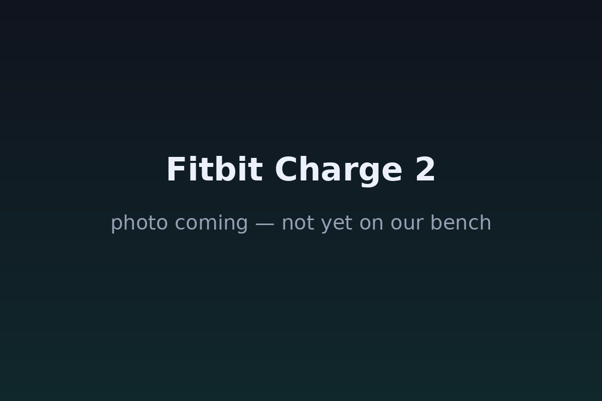

The Autopsy Report · Device #055
Fitbit Charge 2
The wristband that put heart-rate tracking on millions of wrists. Inside: a real microcontroller, a real Bluetooth chip, and — unlike many wearables here — a fully public FCC paper trail.
What is this thing?
The Fitbit Charge 2 is a fitness wristband — step counting, continuous heart-rate monitoring, sleep tracking, and a tap display that shows time, stats, and call or text alerts. The model number is FB407. FCC filing
Not yet on our bench
Straightforward honesty first: BareBoard has not possessed, disassembled, tested, booted, or touched the firmware of this unit. We don't have one on the bench yet. Everything below is built from public records — FCC filings, manufacturer material, datasheets, manuals, and published teardowns — with every claim linked to its source and graded for confidence. When a fact genuinely requires our hands on hardware (boot logs, our own photos, exact board revision of a future unit), we say so out loud.
That framing is what makes publishing now legitimate: this is a public-records autopsy, and it will grow into a bench autopsy the day a unit lands on our desk.
A short history
- August 29, 2016Fitbit files for FCC authorization of model FB407 (FCC ID XRAFB407); the grant lands the same day. FCC filing
- Fall 2016The Charge 2 launches as the follow-up to the original Charge HR. Electronics360
- February 25, 2017The FCC's photos, user manual, and test reports for FB407 become public. FCC filing
The outside
A slim tracker module that pops out of an interchangeable wristband. The front carries a 0.96-inch monochrome OLED (128×72) you tap to wake; the back has the green-LED heart-rate sensor window. The tracker clips into the band and charges via a dedicated clip cable. Electronics360

The board
Electronics360's teardown opens the tracker to reveal a single small board carrying an STM32L485JE microcontroller, an ST BLUENRGCSP Bluetooth chip, a SiT1552 oscillator, MAX44260AYT+ amplifiers, and an ST LPS35HW pressure sensor. The board also hosts the heart-rate sensor's LED drivers and the OLED flex connector. Electronics360
Under the microscope: the chips
What's inside, what each part does, and how sure we are. Confirmed means a primary source. Likely means well-corroborated public records.
| Chip | What it does | How we know | Dig deeper |
|---|---|---|---|
| STM32L485JE | The main microcontroller — runs the firmware, reads the sensors, drives the display. | Likely Named in the Electronics360 teardown. Electronics360 | STM32L4-series datasheet (family reference) — a datasheet for this exact marking was not located. |
| ST BLUENRGCSP | Bluetooth Low Energy connectivity to the phone. | Likely Named in the teardown. Electronics360 | BlueNRG-1 datasheet (same family) — we don't equate the exact BLUENRGCSP marking with the BlueNRG-1 without proof. |
| ST LPS35HW | Barometric pressure sensor — altitude/floor-counting. LPS35HW datasheet | Likely Named in the teardown. Electronics360 | LPS35HW datasheet |
| SiT1552 | Timing oscillator — the board's heartbeat clock. | Likely Named in the teardown. Electronics360 | No public datasheet located for this marking. |
| MAX44260AYT+ | Amplifiers — likely in the heart-rate sensor's analog front end. | Likely Named in the teardown. Electronics360 | No public datasheet located for this marking. |
The government's file on this device
Fitbit's FCC filing — FCC ID XRAFB407, model FB407 — was applied for and granted on August 29, 2016. The radio is Bluetooth Low Energy in 2.402–2.48 GHz at a listed output power of 2.3 mW. Internal photos, the user manual, and test reports became public on February 25, 2017. The schematic, block diagram, and operational description stay confidential. FCC filing
Browse the file yourself: filing page
Debug & service modes
Our posture: we listen, we don't knock. Only publicly verified interfaces.
User-facing: the Charge 2 restarts and can be erased through the Fitbit app and the device's own settings — ordinary, documented, user-level operations.
No public debug interface. No serial console, JTAG header, or diagnostic mode appears in any public record we found. We don't invent one.
What the public record says
A real engineering document exists. The Charge 2 is the best-documented device in this batch: a chip-level teardown plus a complete FCC exhibit set — rare air for a consumer wearable. Electronics360 · FCC filing
But teardown markings aren't datasheets. Several chips here carry exact markings the public literature doesn't document — so our table names them and says plainly where the paper trail stops.
What we didn't do
- We have not possessed, disassembled, tested, or booted this device.
- We have not extracted, modified, shared, or reverse-engineered its firmware.
- We document only publicly verified interfaces and user-facing modes — read-only, no lock bypass, no authentication defeat, no credential or key material.
- Anything below marked as unknown stays unknown until the bench says otherwise.
By the numbers
- Model: FB407 (FCC ID XRAFB407)
- MCU: STM32L485JE · Bluetooth: ST BLUENRGCSP
- Display: 0.96-inch monochrome OLED, 128×72
- Radio: BLE 2.402–2.48 GHz at 2.3 mW (FCC-listed)
- FCC: applied and granted August 29, 2016 · exhibits public February 25, 2017
Words to know
Every term this page uses, in plain English. No prior knowledge required.
- Microcontroller (MCU)
- A small all-in-one computer chip that runs the device's firmware. The STM32 is this one's brain.
- Bluetooth Low Energy (BLE)
- A low-power flavor of Bluetooth, designed for gadgets that sip battery.
- Pressure sensor
- Measures air pressure to estimate altitude — how the band counts floors climbed.
- Amplifier
- Boosts the faint electrical signal from the heart-rate sensor so the chip can read it.
- FCC ID
- The ID the FCC assigns to each approved wireless product. Punch it into fccid.io and the whole public filing comes up.
Sources & confidence
- FCC filing XRAFB407 (Fitbit Inc., model FB407, application/grant August 29 2016, 2.402–2.48 GHz at 2.3 mW, exhibits public February 25 2017, confidentiality holdings): primary source — Confirmed.
- STM32L485JE, ST BLUENRGCSP, LPS35HW, SiT1552, MAX44260AYT+, 0.96-inch OLED: Electronics360 teardown — Likely.
- LPS35HW datasheet: primary datasheet — Confirmed. STM32L4-family and BlueNRG-1 datasheets: family-level references only, flagged as such.
- Anything not listed here is unknown until the bench says otherwise. We'll say so, out loud, when that's the case.
Serial numbers and QR codes are blacked out of every published photo. Raw originals stay private.
Legal note. BareBoard is an educational project. Everything on this page comes from public records — FCC filings, manufacturer material, datasheets, and published teardowns — plus our own analysis of those records. We don't publish, host, or distribute firmware, keys, passwords, or credentials. Product names and trademarks belong to their respective owners and appear here only to identify the hardware. If you believe anything here infringes your rights, contact us and we'll address it promptly.